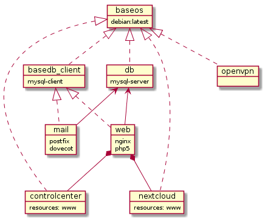

A tutorial on creating and deploying a personal cloud
This system is packaged and deployed as a set of Docker images.
The images include:
- MySQL database
- Email (Dovecot, PostFix, opendkim) SSL enabled
- OpenVPN
- NextCloud SSL enabled
- Nginx webserver SSL enabled
Download it from Github
Background
Inspired by this article ‘The Dawn of the Personal Cloud’, I decided to create a personal cloud in the same vein.
One main component of a personal cloud is file share and sync. Nextcloud provides this as well as calendars, contacts, and more…
The NetFileBox Github Repository has simple instructions on getting Nextcloud up and running using MySQL and NGINX web server. The applications are installed and deployed in a Vagrant VM which provides an nice isolated environment on your host. It can run on Windows, Mac and Linux. You don’t need to know the details on how to install and configure a web server, database, Nextcloud or Docker. Just run a simple set of commands and you will be up and running in no time. The predefined list of commands can be copied into the Vagrant terminal one at a time. Nextcloud will be accessible through https when complete.

The applications for this project are packaged in Docker images available on Docker Hub from an account I created called NetFileBox. When I first started the project in 2013, Linux containers where not yet popular. At that time, I created scripts to install applications directly on the host filesystem. When Docker came out, and I quickly saw the benefits of packaging applications in isolated bundles separate from the host file system. The project was converted to Docker images in 2015.
Docker Containers
Docker containers and Linux containers in general are isolated environments that can run applications. They contain a Linux file system and any applications we install on top of that but it does not contain a kernel. It uses the kernel of the host system. Containers provide many advantages over installing applications directly on the host file system. We start with a fresh Linux install, secure it, then install Docker images that contain the applications. The host file system stays pristine as all the applications are installed and run in isolation. Find out more about Docker here.
In our setup, the web container runs Nginx and db container runs MySQL. Nexcloud is a data container. Data containers don’t typically run stand alone by themselves but contain resources used by other containers. Web resources in the Nextcloud container are made available to the web container. This is done by using the volumes_from entry shown in the Docker-compose.yml below. Nextcloud resources are available to web.
The db container is network accessible from the web container. This is done using the links entry shown below. The links entry will cause the /etc/hosts file in the web container to contain an entry for the db and its ip address. This allows ‘ping db’ to work for example. Database connections from web can be established using the name ‘db’.
Docker-compose.yml web container snippet
image: netfilebox/web
container_name: web
hostname: web
ports:
- 80:80
- 443:443
links:
- db
environment:
MYSQL_ROOT_PASSWORD:
FQDN:
EXTERNAL_IP:
volumes:
- /opt/netfilebox/data/web/logs:/var/log/nginx
- /opt/netfilebox/data/ssl:/opt/ssl
- /run/systemd:/run/systemd
volumes_from:
- nextcloud
In our setup, the DockerFile shown below creates a base image from which all others inherit. It does a system update, installs vim (because I like to edit in vim), then installs a few utilities including curl wget zip unzip bzip2.
#baseos DockerFile
FROM debian:latest
MAINTAINER Paul S. Russo "paul.russo@netfilebox.com"
RUN apt-get update && apt-get autoremove && apt-get -y install vim curl wget zip unzip bzip2`
NetFileBox Docker image hierarchy

In the above diagram, mail and web inherit from basedb_client which has mysql client software. Since mail and web are dependent on the db to be running at startup, they loop continually pinging the db until available. Once the db is available, they continue initializing. Below is the basedb_client DockerFile.
#basedb_client DockerFile
FROM netfilebox_baseos
MAINTAINER Paul S. Russo "paul.russo@netfilebox.com"
RUN apt-get install -y mysql-client
COPY ./Dockerfiles/opt/ /opt/